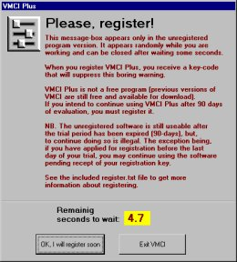
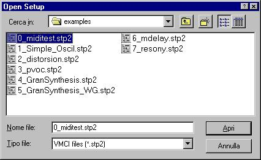

VMCI Plus: Getting Started Step by Step
(With the DirectCsound Examples Included)
In order to start using VMCI Plus together with DirectCsound, a certain degree of knowledge of Csound can be useful, especially if you will get some errors, in order to correct it.
Notice that (for copyright reasons) DirectCsound is not included in the VMCI distribution. However you can get it separately for free (see register.txt file).
Goto Main manual
Testing VMCI Plus
The first steps to play with the first example provided in the VMCI Plus program archive are the following:
- After installing VMCI Plus, DirectCsound and the Hubi's loopback virtual device, you have to start VMCI by double clicking the corresponding shortcut you just created.
Probably you are using an unregistered version, so a dialog box will appear:

You can close this dialog-box after waiting some seconds. This dialog box appears only in unregistered versions (register please!).
Then click the OK button and the activation bar will appear:

- Be sure that the MIDI out port is set to LB1 by clicking to the
 button and selecting it:
button and selecting it:
Then click OK. (Notice that LB1 cannot be available if you didn't install Hubi's loopback virtual device first. In this case VMCI cannot control DirectCsound).
- Click the load button () and select the "0_miditest.stp2" file. 
Open it.
The 7-bit slider panel will appear:
- Set the focus to the 7-bit slider panel and click the "Run Csound Button". If the DirectCsound executable has been placed in the correct directory (C:\csound\csound.exe) and the orchestra and score are in the correct directory too (C:\csound\examples\miditest.ORC C:\csound\examples\miditest.SCO), the csound console window will appear:
Then type the MIDI in port number corresponding to LB1 port (1, in the case of this picture) and to press Return. Then, if more than an audio OUT port are installed in your computer, a list of DirectX devices will appear in the DirectCsound console:
Type the device number and presse RETURN. DirectCsound should be now active.
- press the
 button in the slider panel. You should hear a note playing. If you don't hear anything, check the mixer volume and the connection of your amplifer. If you still don't hear nothing, probably DirectCsound detected an error. As all console messages are suppressed by the -+O and -m0 flags, you have no way to see what error happened. So close the DirectCsound window by selecting it and typing CTRL-C; click the button, the following dialog box will appear:
button in the slider panel. You should hear a note playing. If you don't hear anything, check the mixer volume and the connection of your amplifer. If you still don't hear nothing, probably DirectCsound detected an error. As all console messages are suppressed by the -+O and -m0 flags, you have no way to see what error happened. So close the DirectCsound window by selecting it and typing CTRL-C; click the button, the following dialog box will appear:
Edit the "Flags" text field removing the +Om0 string. The string should is the following:
-d+K+Xb200P99
Press the "Update strings" button and close the dialog box. Then press the "Run Csound Button" again. Now you should see what kind of error happened in the DirectCsound console window. Correct the error and press the "Run Csound Button" again. If the error was corrected, restore original flag settings in the "Flags" text field of the "Csound settings" dialog-box.
- Open the virtual keyboard panel by clicking the check-box in the activation bar. The following window will appear:

You can click anyone of the piano-like buttons, starting from the bottom row (the more bass notes). You notice that they will trigger Csound instrument notes in realtime. While virtual keyboard panel having got the focus, you can also press the alphanumeric keyboard keys to play notes. You can reconfigure each key by changing MIDI channel and note number configuration of each button. See virtual keyboard panel for more information.
- If you have an external MIDI keyboard connected to the MIDI IN port of your computer, you can control DirectCsound orchestra both with the virtual keyboard and with the external MIDI keyboard. To do this, you have to run the "Hubi's MIDI cable" by double clicking the Hwmdcabl.exe icon :
(or a shortcut you created in the desktop or start menu). Notice that this utility program doesn't show a window when it starts. In order to configure it you have to look at the Windows task-bar and right-click the corresponding button. A pop-up menu will open and you have to set both the hardware MIDI input port to which the MIDI keyboard is connected and the LB1 virtual MIDI output port. When all this is done, you shoul be able to play current instance of DirectCsound both with VMCI and the external MIDI keyboard at the same time.
- When you intend to finish your performance session, set the focus to the DirectCsound console window and type CTRL-C to close it.
Goto Main manual
Using the Hyper Vectorial Synthesis panel
Steps to play with the Hyper Vectorial Synthesis panel:
- Open VMCI Plus program.
- Be sure that VMCI MIDI output port is set to LB1.
- Load the "4_GranSynthesis.stp2" file, placed in c:\csound\examples directory. The 7-bit slider panel will appear:
![[Image]](pict12.jpg)
- Start DirectCsound by clicking the "Run Csound Button" .
- Set the focus to the 7-bit slider panel and click the
 button in order to update the parameters (see 7-bit slider panel section of manual for more details).
button in order to update the parameters (see 7-bit slider panel section of manual for more details).
- Click the button to activate a sound. Then click one of the snapshot buttons. You will see the sliders will change their positions when you click differents snapshot buttons; the audible sound configuration should change too.
- Click the button in order to open the Hyper Vectorial Synthesis control panel. The HVS panel will appear:
- While the DirectCsound note is still playing, drag the mouse in the sensitive area, you will notice the sound changing continuously. Notice that you don't have to click in the buttons contained in each area (otherwise a dialog box will appear). It is possible to hide the buttons placed in the mouse-sensitive areas; to do this, click the
 button. The following dialog-box will appear:
button. The following dialog-box will appear:

... set the "view buttons" check-box unchecked and close this dialog-box.
Goto Main manual
How to become a VMCI master
VMCI Plus, and, all the more reason, Csound, are not easy-to-learn programs. But they are extremely powerful tools to make new kind of music. In order to become a VMCI virtuoso, you have to learn Csound DirectCsound and to study all the VMCI manual accurately. Even after years of use you will discovered that only a little part of the VMCI/Csound field have been expolored. But your efforts will be hugely rewarded. You will discover infinite amount of possibilities, never explored ways to mould sonic matter. I will give VMCI/Csound courses. Contact me to stay in touch with the latest VMCI news about developement and seminars.
Goto Main manual